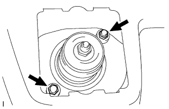
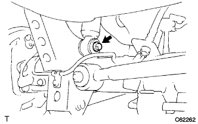
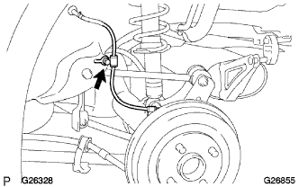

Rear shock absorber W/coil spring (4WD) Installation |
| 1. Rear shock absorber W/coil spring temporary tightening |
|  |
Attach the rear shock absorber W/coil spring to the body with two nuts.
|  |
Temporarily tighten the bolts and nuts of the shock absorber (loower side).
|  |
At the bolt, attach the speed sensor to the body.
| 2. Rear tire installation |
| 3. Calm down the vehicle |
Jack the vehicle, shake up and down several times, and calm the rear suspension.
| 4. Rear shock absorber W/coil spring main tightening |
Axle housing is supported by jacks and the like and loading the suspension.
The bolts and nuts of the shock absorber (loower side) are tightened.
| 5. Installation |
Attach the rear basora cap.